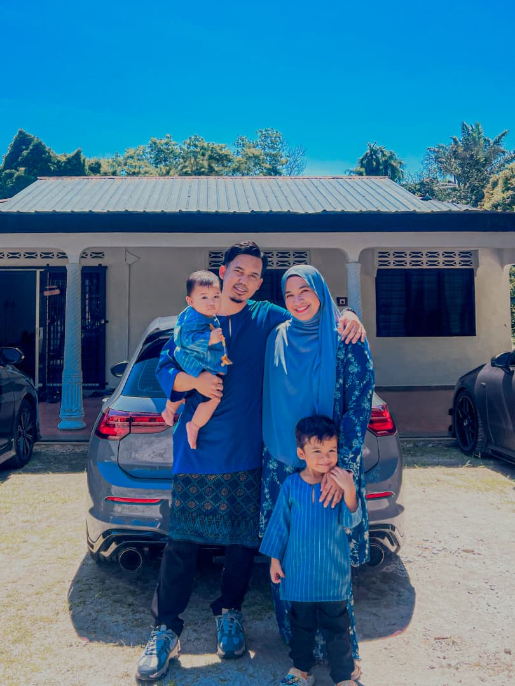

I'm Ahmad Adib Fharqhan, based in Petaling Jaya. I am a highly motivated Information Systems undergraduate with a strong passion for data. Through my current role at Tenaga Nasional Berhad (TNB), I have gained exposure to large-scale, real-world data ecosystems, further strengthening my ambition to become a Data Analyst.
"Without data, you're just another person with an opinion." — W. Edwards Deming
I believe that every efficient system is built upon well-structured data. Driven by continuous learning, I am committed to refining my analytical skills to transform raw data into meaningful insights and impactful business narratives.
My Daily Routine:
- Filter and prioritize daily tasks
- Process operational data systematically
- Work on personal upskilling (coding, data tools)
- Iterate and optimize workflows

Skills
What I'm good at.
Professional Traits
- Time Management
- Adaptability
- Communication
- Problem Solving
Data Skills
- Microsoft Excel & Power BI
- Data Sorting & Filtering
- Python for Data Analysis
- Data Presentation
Business Tools
- Microsoft Office Suite
- Collaboration Tools
- Documentation
- Presentation
Development
- HTML/CSS
- Database Querying
- Basic Scripting
- Wireframing
Certificates
Credentials & achievements.
Gemini Certified Educator
2025
AI and Career Empowerment AI and Career Empowerment
University of Maryland Robert H. Smith School of Business
2025
Deen List Semester 1 & 2
Universiti Teknologi MARA
2025
Experience
Where I've been.
2019 — Present
Payment Recurring and System Support
Tenaga Nasional Berhad
Manage and maintain departmental records, files, and documents in a systematic manner; ensure data accuracy, integrity, and security; organize documentation for easy access in compliance with audit standards (PCIDSS & SIRIM); and support the preparation of periodic reports.
2018 — 2018
IT Internship
Tenaga Nasional Berhad
Responsible on troubleshooting computer hardware, setup & configure network switches,server, cable management, CCTV
Education
Academic background.
| Year | Institution | Qualification |
|---|---|---|
| 2025 - Present | Universiti Teknologi MARA | Bachelor Degree in Information System |
| 2013 - 2018 | Universiti Teknologi MARA | Diploma in Computer Science |
Media